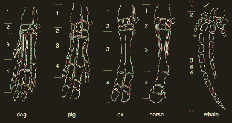

Cephi and Scout dream of visiting alternate ecological histories of Earth, and getting genetically cursed.
Curses are not always necessarily caused by exposure to a species (e.g. being bitten) - they’re caused in worlds where evolution is so extremely biased in one way that your system is like oh fuck we gotta adapt to this right now and kicks into hyper-evolution.
o no this universe really just wants to be full of dogs and im a dog now
Curses are like productive cancers: viral evolution that makes you more like the dominant animal in the dimension that cursed you. Curses are attacks on the genome that take immediate effect on the target by awakening and rapidly evolve the genes from the common ancestor you and your assailant share.

It’s like therianthropy as a progressive disease. They’re not fucked up in the sense that they’re not functioning, I think the curses are like the opposite of cancer. They productively mutate you in an instant with adaptations that aren’t necessarily bad, just a new biology for you to adapt to. But they can mix maladaptively.
The classifications for all these curses are all pseudoscientific portmanteus, e.g. Lepidopterativism describes a curse that would make one show traits of a moth or butterfly.
Most of the ’verses are filled with crabs, the perfect critter. (luckily the carcinogenic carcinisation is not too bad on our Earth).